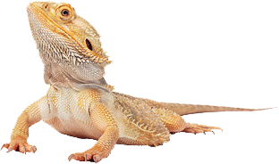
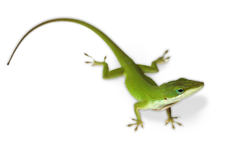

Bearded Dragon
(Level: Beginner)
Bearded dragons are medium-sized desert lizards that can grow up to 24 inches in length and can range from
colors such as red, brown, yellow, and white. Although bearded dragons are friendly and can live well in groups,
they mostly prefer to live in solitude. Adult bearded dragons need at least a 40 gallon, glass terrarium with
2-3 inches of calcium sand. (For younger bearded dragons, reptile carpets are recommended instead of sand).
Use UVA/UVB bulbs during the day as their heat source for 12 hours a day at temperatures between 100-110°F at a
place where they can bask. Your dragon's habitat should also have a thermometer and hygrometer to make sure the
humidity in their tank is between 20-30%. Any waste in the terrarium should be removed at least once per week.
Be sure to also provide driftwood, rocks, and plants to provide them with places to cool, hide, and climb.
Bearded dragons are omnivores which means they can eat both meat and plants. Young dragons mostly eat insects,
but as they become adults, they also gain a diet of vegtebles. Food includes:
- Insects: crickets, mealworms, and waxworms
- Vegetables: leafy greens and carrots
- Fruits: apples, bananas, and melons
Be sure to also clean their water and food bowls daily!
Newly bought bearded dragons should be left alone for a few days in order to prevent stress and allow them
to get used to their new home.
Bearded dragons that are sick can experience symptoms such as:
- Weight loss
- Lower eating habits
- Swollen joints
- Discolored skin
- Discharge from the eyes, nose, or mouth
If your bearded dragon experiences any of these symptons, it is best to take them to the vet as soon as possible.
A healthy bearded dragon can
live for up to 10 years.
Anole
(Level: Beginner)
Anoles are small lizards that can be a wide variety of colors such as green, brown, and gray depending on their mood
and the environment. If you plan to own only one anole then have a terrarium with atleast 10 gallons of space. If you
plan to have a group anoles you should have atleast more than 20 gallons. I also recommend that if you will have a group
of anoles, to have a limit of only one male as they are territorial and males may become agressive towards eachother.
The terrarium should contain coconut fiber or moss bedding that should be changed once a month. The terrarium should also
contain rocks that provide them a place to hide and plenty of plants and vertical branches as they love to climb.
The best way to control the temperature of an anole's habitat is to have the top of the terrarium be warmer than the
bottom. During the day, keep the temperature at the top between 85-90°F and the temperature at the bottom of the
terrarium between 75-85°F. At night, the temperature should be 65-75°F. Use a UVA/UVB bulb to warm up the top of the
habitat for 12 hours daily and monitor the temperature with a thermometer. Use a hygrometer to keep track of the humidity
which should be between 60-80%. Anoles are insectivores which means that they primarily eat insects. Their diet includes
crickets, mealworms, and waxworms which should be given 1-2 times a week. Use a shallow dish to provide them with water
that should be changed daily. Anoles should not be handled until after 3 days of being bought
in order to let them settle
in. Unhealthy anoles show symptoms such as:
- Weight loss
- Runny droppings for more than 2 days
- Swollen joints
- Shedding problems
- Discharge from the eyes, nose, or mouth
If your anole experiences any of these symptons, it is best to take them to the vet as soon as possible.
In the wild, anoles typically live for
only 4-5 years, but an anole that is well cared for can live double that amount.